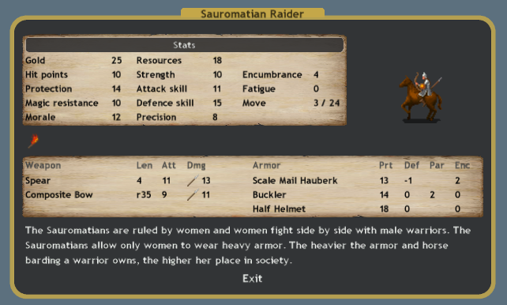
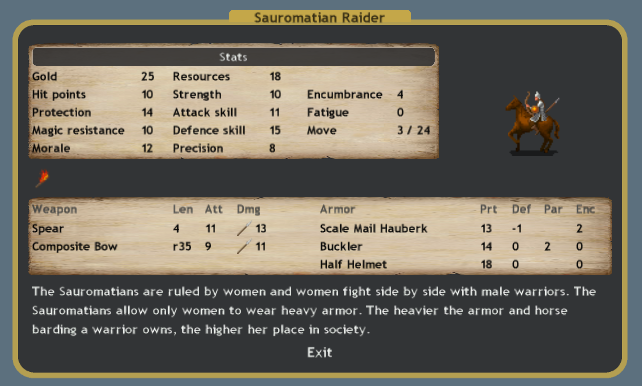

Consider expanding with Oiorpatas only if you have a W6+ bless. Otherwise they are too expensive for what they do.
Most of the time you will be expanding with the three following units: -Sauromatian Archers, -Lancers, and -Raiders.
 

 And of these you will either be combining raiders and archers, or lancers and archers.
And of these you will either be combining raiders and archers, or lancers and archers.